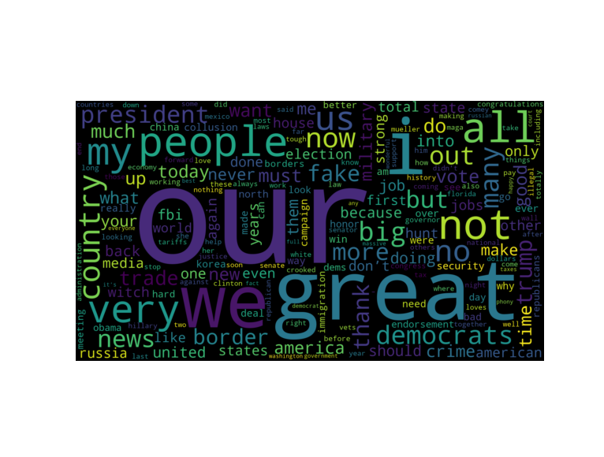

Word Frequency Analysis of Trump’s Most Recent Tweets
By Gianna Tricola and Michael Custance 
By Gianna Tricola and Michael Custance


Useful for liguistic analyses as they:
give insight into the verncular of individuals and groups of people in specific regions during particular periods of time.
provide information on trending topics


# import necessary packages
import pip, csv, json, tweepy, fnmatch, string
import numpy as np
import matplotlib.pyplot as plt
import pandas as pd
import seaborn as sns
from collections import Counter
from wordcloud import WordCloud
from PIL import Image
### get in twitter environment ###
### source activate twitter ###
consumer_key = 'kbMAphoqE5gMUJIofDwRAA8Mm' # API Key
consumer_secret = '8XiLrPhol1L6FVxHGXgQgNEh0ngvUx5xlQUXny0ZiI6Q0Uue7I' # API Secret
access_key = '878766942085156865-IOJccRODzhK4JsQGHfu0s6k5geBoZMs' # Access Token
access_secret = 'dlZbMrubLkzLTbnvq32htRoR4seZHrym4n2MxOwE0o0hx' # Access Token Secret
### ping a twitter account and extract tweets ###
### https://gist.github.com/yanofsky/5436496 but change python2 things to python3 ###
def get_all_tweets(screen_name):
# Twitter only allows access to a users most recent ~3240 tweets with this method
# authorize twitter, initialize tweepy
auth = tweepy.OAuthHandler(consumer_key, consumer_secret)
auth.set_access_token(access_key, access_secret)
api = tweepy.API(auth)
# initialize a list to hold all the tweepy Tweets
alltweets = []
# make initial request for most recent tweets (200 is the maximum allowed count)
new_tweets = api.user_timeline(screen_name = screen_name,count=200)
# save most recent tweets into alltweets list
alltweets.extend(new_tweets)
# save the id of the next tweet that wasn't originally pulled
oldest = alltweets[-1].id - 1
# keep grabbing tweets until there are no tweets left to grab
while len(new_tweets) > 0:
print("getting tweets before %s" % (oldest))
# all subsequent requests use the max_id paramater to prevent duplicates and pull the next group of tweets
new_tweets = api.user_timeline(screen_name = screen_name,count=200,max_id=oldest)
# save most recent tweets into alltweets list
alltweets.extend(new_tweets)
# save the id of the next tweet that wasn't originally pulled
oldest = alltweets[-1].id - 1
print("...%s tweets downloaded so far" % (len(alltweets)))
# transform the tweepy tweets into a 2D array that will populate the csv
outtweets = [[tweet.text.encode("utf-8")] for tweet in alltweets]
# return outtweets
# write utf-8 converted tweets into a csv file
with open('%s_tweets.csv' % screen_name, 'w') as f:
writer = csv.writer(f)
writer.writerows(outtweets)
pass
if __name__ == '__main__':
# pass in the username of the account you want extract the tweets from
user_name = 'realDonaldTrump' # can input a different twitter handle here to analyze
get_all_tweets(user_name)
# pd.read_csv('realDonaldTrump_tweets.csv')
# name the CSV using the twitter handle you are analyzing
filename = "%s_tweets.csv" % (user_name)
f2 = open(filename)# Filter the data 1. Remove retweets 2. Exclude numbers, twitter handles, urls, prepositions, punctuation
### split tweets into 2 lists: retweets and orig_tweets ###
retweets = [] # can ignore this list, since we are not analyzing retweets
orig_tweets = []
for tweet in f2:
# print(tweet)
if "RT" in tweet:
retweets.append(tweet)
# continue # if you want to skip these tweets rather than assigning them to the list retweets
else:
orig_tweets.append(tweet)
# print(orig_tweets)
# print(retweets)
# print(len(orig_tweets))
# print(len(retweets))
### from orig_tweets, exclude words that contain numbers, @, or url's into word_list ###
unwanted_word_list = []
word_list = []
for tweet in orig_tweets:
# print(tweet)
fields = tweet.strip("\r\n").split() # splits strings in orig_tweets into lists of strings
# print(fields) # where each word is it's own string
for word in fields:
# print(word)
### exclude meaningless words, twitter handles, numbers, and URLs ###
exclusions = ["*https://*", "*@*", "*1*", "*2*", "*3*", "*4*",
"*5*", "*6*", "*7*", "*8*", "*9*", "*0*", "the", "a", "and", "to", "on", "is", "in", "of", "in",
"for", "with", "that", "be", "will", "it", "as", "was", "at", "are", "this", "from"]
if any(fnmatch.fnmatch(word, exclusion) for exclusion in exclusions):
unwanted_word_list.append(word)
# continue # if you want to skip these tweets
else:
translator = str.maketrans('', '', string.punctuation) # remove punctuation from word strings
word = word.translate(translator)
word_list.append(word.lower()) # make all characters lowercase so identical words don't read differently
# print(unwanted_word_list)
# print(word_list)
# print(len(unwanted_word_list))
# print(len(word_list))Define threshold in the parameters
### get word frequency from word_list and assign to a dictionary ###
counts = Counter(word_list) # count word frequency and assign to a dictionary
# print(counts)
threshold_value = 20 # sets a threshold for the number of times a twitter user has used a word
threshold_counts = {} # new dictionary with only words above threshold value
for key, value in counts.items():
if value > threshold_value:
threshold_counts[key] = value
# print(len(threshold_counts))### wordcloud using threshold_counts ###
### https://stackoverflow.com/questions/43043437/wordcloud-python-with-generate-from-frequencies?rq=1 ###
wordcloud = WordCloud(width=900,height=500, max_words=1628,relative_scaling=1,
normalize_plurals=True).generate_from_frequencies(threshold_counts)
plt.imshow(wordcloud, interpolation='bilinear')
plt.axis("off")
plt.show()